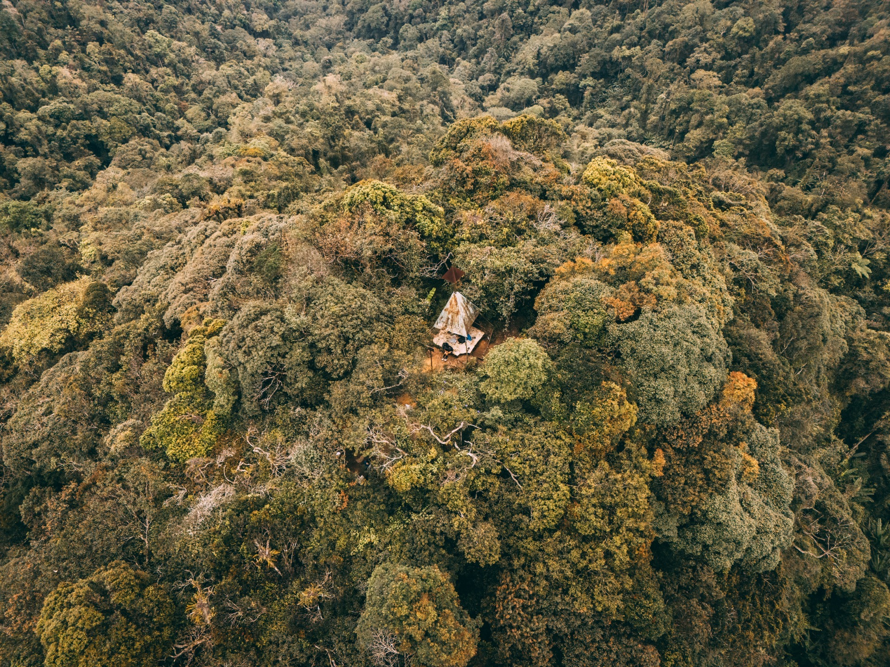

Why I Think Gunung Nuang Is Harder Than Mount Kinabalu 😂
For me personally — I honestly think Gunung Nuang is harder than Mount Kinabalu. There, I said it hahaha.
Even though Mount Kinabalu is 4,095m high and is the highest mountain in Malaysia, while Gunung Nuang is only around 1,493m.
Gunung Nuang is not even the highest mountain in Peninsular Malaysia. That title belongs to Gunung Tahan at 2,187m. It's also only the 3rd highest mountain in Selangor and doesn't even make the famous Malaysia G7 mountains list.
But somehow…
This mountain still feels harder for me. 😂
And after hiking it 3 times already, I think I finally understand why.

Gunung Nuang summit, Hulu Langat — Mountain #5 of the 60 Mountains Challenge Malaysia
Gunung Nuang Has Two Main Routes
Gunung Nuang actually has two hiking routes — and they feel like two completely different mountains lah.
1. Janda Baik Route
The Janda Baik route is considered slightly hard to hard. Normally people take around 5–6 hours to complete up and down, depending on pace and weather conditions. Still tiring, but manageable for experienced hikers.
2. Pangsun Route — The Famous One 💀
Then there's the Pangsun route from Hulu Langat, Selangor. This is the most popular route. And also the hardest one 😂
For normal hikers, it usually takes around 12–15 hours to complete the whole hike up and down.
Honestly if you've never hiked a mountain before — or have no experience with at least 4–6 hour hikes — better don't simply try first lah. This mountain really can destroy your stamina badly hahaha.
This one is really not "play play" mountain 💀
The First 5KM Is Fake Hope 😂
The beginning actually still okay lah. You walk on a forest road first. Quite chill, can still talk and joke around.
Then after around 5KM…
The real suffering starts hahaha.
Suddenly everything becomes:
- Steep jungle trekking 😭
- Muddy trails everywhere
- Endless uphill climbing
- Slippery sections
- Roots and rocks everywhere you step
Compared to Mount Kinabalu where the trail is more organized with proper stairs and designated resting huts, Gunung Nuang feels much more raw. More wild. And honestly much more mentally tiring.
Cross Rivers, Climb Hills, Repeat 🔥
Another thing that makes this mountain genuinely hard is the terrain itself. It's not just one type of challenge — it keeps changing and testing you.
You need to:
- Cross around 5 rivers along the route
- Climb steep jungle trails with no rope
- Manage slippery terrain especially after rain
- Survive 12+ hours of continuous hiking
During rainy season, this mountain can become dangerous quite fast. The rivers rise, the trails get muddy, and everything gets twice as hard. So weather here is really important — don't underestimate it just because the elevation is lower than Kinabalu.